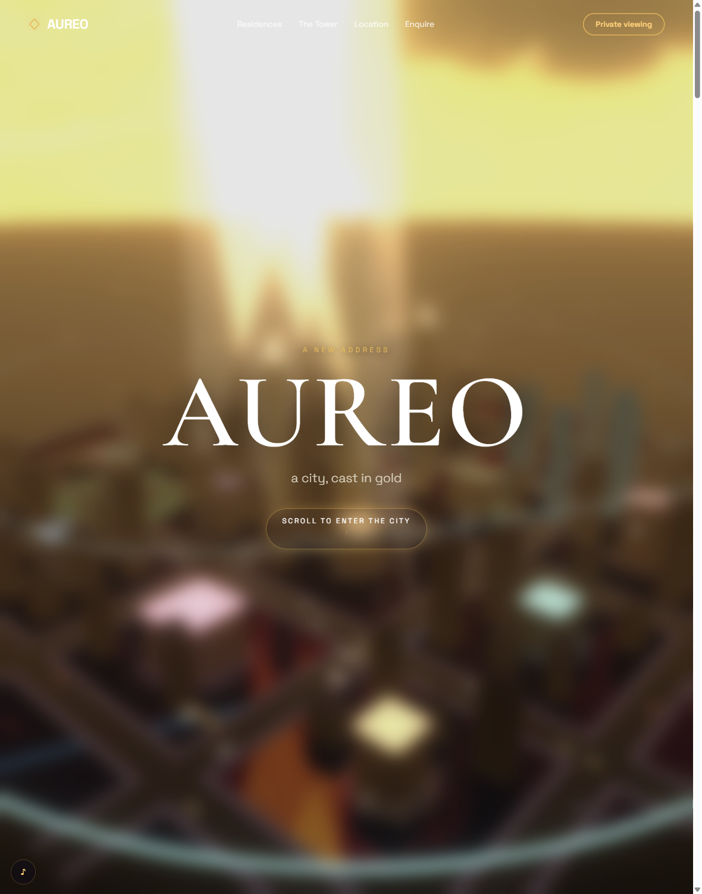
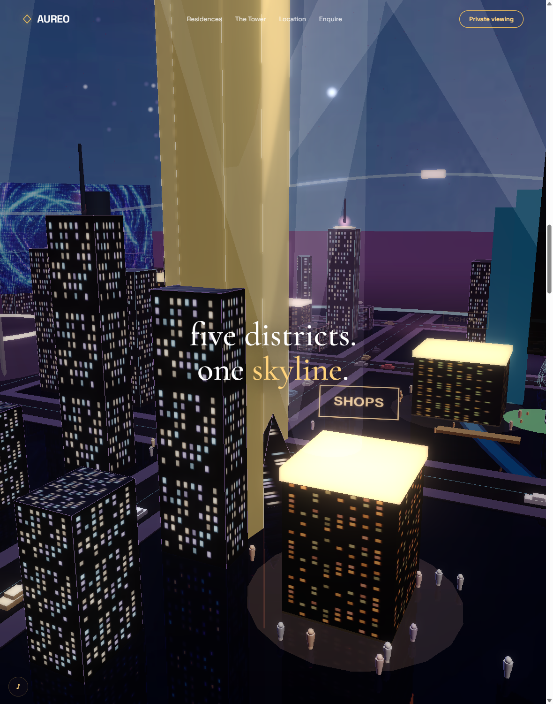
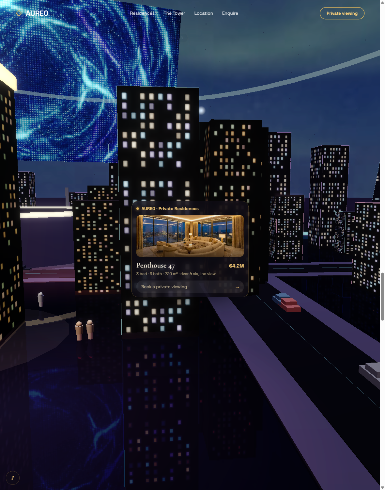
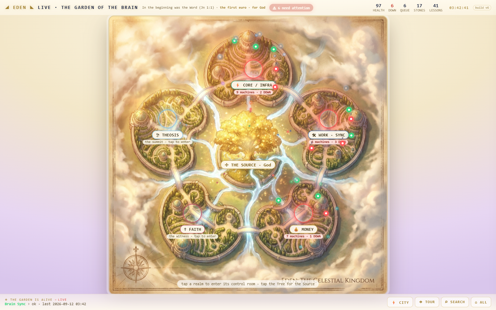
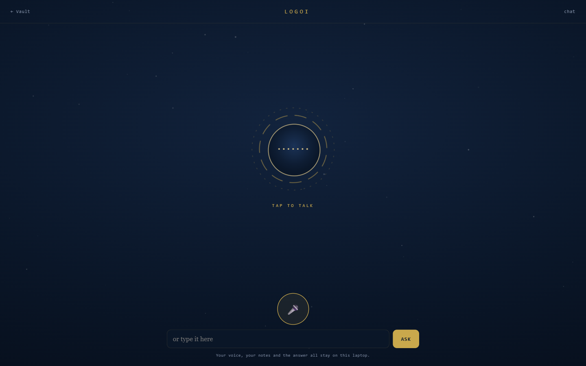

Built 12 September 2026, the day Stage 6 closed. Nothing here is a drawing.
Every picture on this page is real. The city frames were captured today from your own live site, kd-aureo.vercel.app. The system pictures are your running machines, photographed this morning. There is no artist's impression anywhere on this board, because a storyboard made of invented pictures would tell you nothing about what you are actually going to get.
What is proposed is written under each frame in gold, so you can always see which half is the thing that exists and which half is the thing I want your yes on.
Your own words are the spec, 29 August:
"5d will acc be the gui, not 4d"
"The 5D GUI Should be like an ecosystem of the universe and the fromt end and the 4d should be the back end simple ai where i can talk to kd voice control like command centre"
"5d is the combination of it all acc interacting fully immersiv like gta 6, within limt and capabilites"
"Controlloable via vpn on phone or app for king"
One line settles the shape: 4D is the back end, 5D is the face. The back end already exists and you proved it yourself today, speaking to the deck on your laptop and on your phone and hearing it answer. Stage 7 is not a second engine. It is the world you walk through to reach the one you already have.
The three shots that matter, from your own city
Captured from the live site today, at three points along its path.

REAL TODAYYour city's arrival. Gold sky, the grid below, the title card over it. Live at kd-aureo.vercel.app, approved by you on 9 June.In 5D this becomes your front door. The same arrival, the same sky, but the words are your estate rather than a property listing, and the one button says enter rather than scroll. This is the screen you land on when you open KD Robot on your phone.

REAL TODAYThe city itself, working: lit towers, glowing roof bands, a SHOPS sign, SCHOOL at the right edge, people standing in rings on the pavements, cars on the road decks, a canal running under a bridge. Its own caption reads five districts, one skyline.Five districts is not a coincidence, it is the map you already drew. EDEN runs your estate as five realms: Core, Work, Money, Faith, Theosis. One district each. The skyline stops being decoration and becomes the layout of your own systems.

REAL TODAYA live card, floating in 3D space, attached to a building: AUREO Private Residences. Penthouse 47. 3 bed, 3 bath, 220 m². €4.2M. Book a private viewing.This is the whole mechanic, and you already built it. Approach a building, a card appears with that building's real details and one action. Swap the penthouse for your engine and the price for 3 missions running, 0 waiting, and iota 7.3 stops being an invention and becomes a change of what feeds a card that already works. This is the single biggest reason Stage 7 is smaller than it sounds.
The buildings, and what is really inside them
These are your running systems, photographed this morning. Each one becomes a place in the world.

REAL TODAYEDEN LIVE on :5055. Five realms around the Source, real health, real counts, real machine states. Your own live data, already flowing, already correct.EDEN is the data behind the city. Not a page you visit instead of the world, the source the world reads from. The five realms become the five districts, and a realm in trouble is a district you can see is in trouble from the air.REAL TODAYThe deck on :3200, behind its operator token. This is where you spoke today, and where KD answered you on the laptop and on your phone.Iota 7.4: Talk moves inside the world. Not a separate page you leave the city to reach. You stand somewhere, you speak, and the two replies you already know appear where you are standing. Nothing about the engine changes; only where you meet it.REAL TODAYLOGOI on :5056, your Vault. 64 Logic commands, 57 skills, the command deck, the last sync time.A building of its own, and an honest one. Today LOGOI takes 46.8 seconds to answer with your brain context against 4.8 without, which is exactly why your phone showed a red error earlier. That is a real problem and 5D must not hide it: the building shows what it is actually doing, including when it is slow.

REAL TODAYThe avatar page, where your voice goes in. The footer keeps the promise the code keeps: your voice, your notes and the answer stay on this laptop.This becomes KD's face in the world. The same promise, the same local ear, standing somewhere you can walk up to rather than living on a separate page.
The seven steps
7.0
These steps, written before any code
done
7.1
This board, a real frame per shot
you are reading it
7.2
AUREO off the scroll rail, onto a controller
not started
7.3
The buildings are the real systems
not started
7.4
Talk, inside the world
not started
7.5
On the phone, over your own network
not started
7.6
The honest ledger, on the face of it
not started
What I am NOT claiming. No part of 5D is built. The pictures above are your city as it is today, on a fixed scroll path, not wired to any live data. Taking it off that rail onto free movement is iota 7.2 and it is real work, not a setting.
One measured warning from your own records: frame rate cannot be trusted from an automated browser, which throttles any page to about 2 fps. Every performance claim in Stage 7 has to be checked on your actual phone, the way you checked 6.5 with your actual ears.
And one open question that is yours, not mine: the AUREO source lives at OneDrive, Documents, Website Builder, replicas, aureo. 641 lines, dated 9 June. Your brain had the wrong path recorded until today. Do you want 5D built by changing that file, or by copying it into the brain first so the original stays untouched?